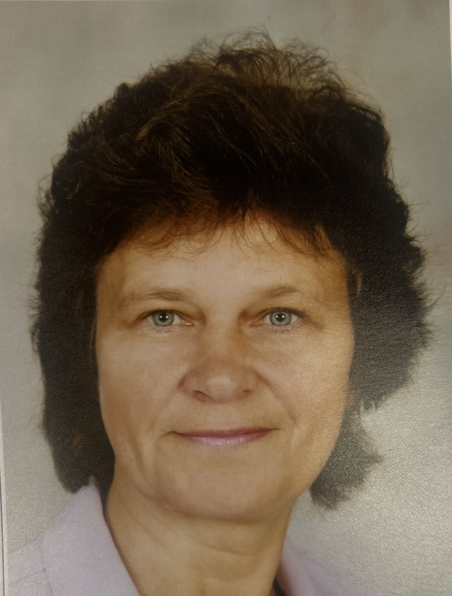

"Jauniešiem vajag izmantot visas iespējas, lai attīstītu savu ķermeni, prātu un spējas, jo nākotnē tas būs ļoti noderīgi."
Intervētājs Markuss Vasiļjevs
Kā skola ir mainījusies kopš jūs sākāt strādāt?
Kopš 1979. gada skolā ir mainījies ļoti daudz — gan skolotāji, gan skolēni, gan attieksme pret mācībām, uzvedība un mācīšanās metodes. Agrāk viss bija daudz stingrāk. Skolēniem bija jāstrādā ar grāmatām un jāveic pieraksti, bet, ja kaut kas netika iemācīts, bija jāpaliek pēc stundām. Skolotāji īpaši pievērsās nesekmīgajiem skolēniem un centās viņiem palīdzēt. Mūsdienās skolēniem ir lielāka brīvība, un attieksme pret mācībām ir kļuvusi citādāka.
Kas bija grūtākais darbā ar skolēniem?
Grūtākais bija ieinteresēt tos skolēnus, kuri nevēlējās mācīties. Vajadzēja atrast veidu, kā viņus motivēt un iesaistīt mācību procesā. Tomēr ar skolēniem kopumā izdevās labi saprasties, arī ar tiem, kuriem bija uzvedības problēmas vai mazāka interese par mācībām. Bija svarīgi, lai gan skolotājs, gan skolēns būtu ieinteresēti sasniegt labu rezultātu. Lai uzturētu disciplīnu, dažreiz klases tika sadalītas grupās, taču visas problēmas tika risinātas sarunājoties un sadarbojoties.
Kā jūs parasti mācījāt stundās?
Kad mācījos vidusskolā un vēlāk augstskolā, pedagogu sagatavošana bija ļoti nopietna. Piecus gadus tika apgūta metodika un priekšmetu pasniegšana. Mācības notika piecas līdz sešas dienas nedēļā, un topošie skolotāji tika rūpīgi sagatavoti gan teorētiski, gan praktiski. Šo iegūto struktūru un darba pieeju vēlāk izmantojām arī savā darbā skolā.
Kādas bija attiecības ar skolēniem?
Man ar skolēniem bija ļoti labas un pozitīvas attiecības. Pat ar palaidnīgākajiem skolēniem izdevās labi saprasties. Es uzskatīju, ka daudz ko var panākt ar mierīgu sarunu, sapratni un cieņpilnu attieksmi. Ar aizliegumiem vai bardzību vien neko daudz nevar sasniegt, tāpēc svarīgākais bija savstarpēja uzticēšanās un komunikācija.
Kā tehnoloģijas, piemēram, telefoni un datori, ietekmēja mācības?
Kad skolās sāka parādīties pirmie datori, tas visiem bija kaut kas jauns un neierasts. Toreiz direktors skaidroja, ka ar datoru palīdzību būs iespējams atrast informāciju, piemēram, par bibliotēkā pieejamajām grāmatām. Tehnoloģijas skolā ienāca pakāpeniski, tāpēc sākumā lielu problēmu nebija. Bija datorikas stundas, kurās skolēni apguva jaunās tehnoloģijas. Tajā laikā skolēniem pārsvarā bija podziņtelefoni, un tos galvenokārt izmantoja zvanīšanai.
Vai ir kāds notikums skolā, ko jūs īpaši labi atceraties?
Īpaši atmiņā palicis kāds gadījums bioloģijas stundā, kad kopā ar skolēniem devāmies ārā. Pie manis pieskrēja suns, un skolēni, zinot, ka baidos no suņiem, nostājās man apkārt aplī, lai mani pasargātu. Tāpat ļoti siltas atmiņas saistās ar dzimšanas dienām, kad skolēni mani sveica un pat pacēla gaisā. Neaizmirstami bija arī dažādie piedzīvojumi ekskursijās.
Kādu padomu jūs dotu mūsdienu skolēniem?
Es ieteiktu skolēniem izmantot visas iespējas, ko dzīve piedāvā, un nelietderīgi netērēt savu laiku. Ir svarīgi lasīt grāmatas, jo tās attīsta domāšanu un paplašina redzesloku. Tāpat jauniešiem vajadzētu sportot, piedalīties sacensībās, dejot vai dziedāt korī. Šādas aktivitātes palīdz attīstīt personību raksturu un prasmes, kas būs noderīgas arī nākotnē.
Ja jūs varētu vienu lietu no skolēnu paradumiem aizliegt uz visiem laikiem, kas tā būtu?
Es vairāk domāju nevis par aizliegumiem, bet gan par ieteikumiem. Mūsdienās ļoti aktuāls ir mākslīgais intelekts, un ir svarīgi saprast, ka mēs paši to attīstām un ietekmējam. Taču noteikti vajadzētu izvairīties no narkotiku lietošanas, smēķēšanas un pārmērīgas alkohola lietošanas. Ja cilvēks apzinās, ka tas kaitē veselībai, bet tomēr turpina to darīt, tas nav pareizi.
SĀKUMS